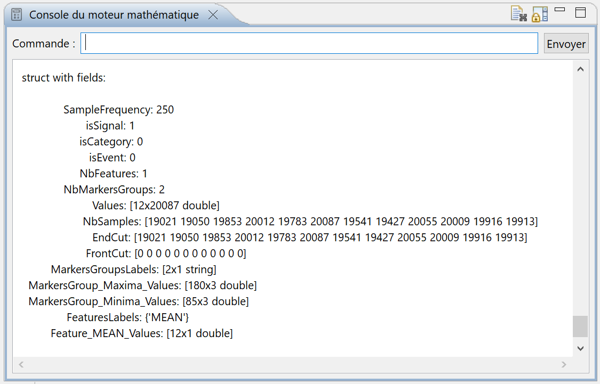
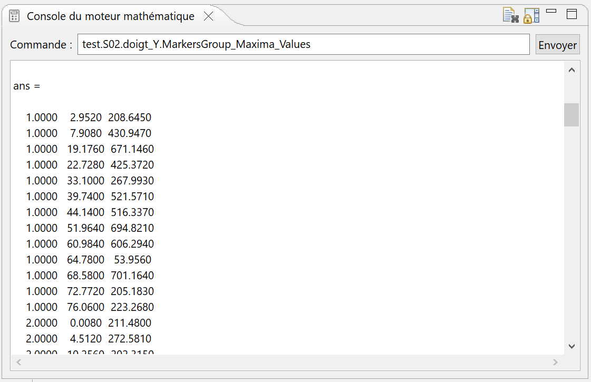
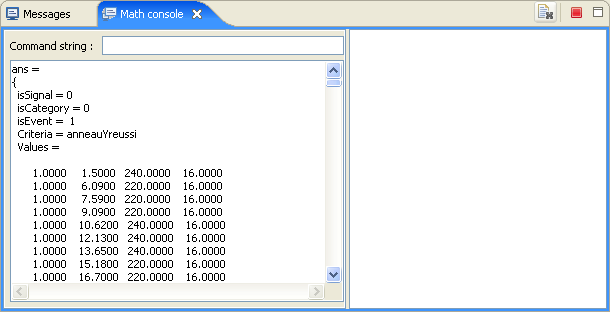
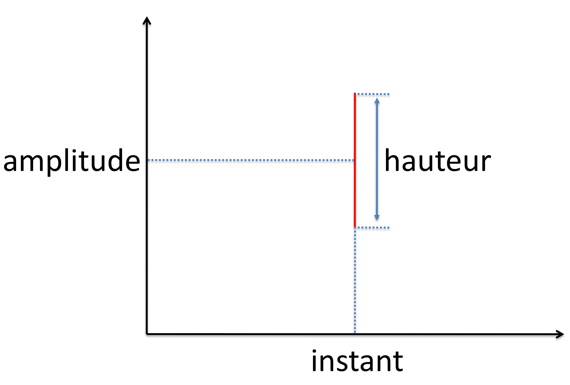
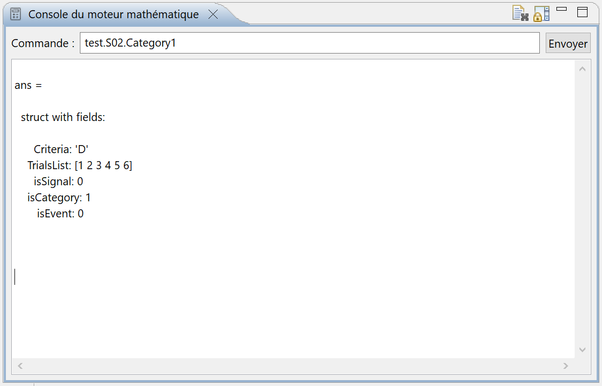

Dans le modèle de données d'Analyse, les signaux regroupent toutes les informations échantillonnées régulièrement lors d'une expérimentation. Les noms des signaux, c'est à dire les noms des éléments dans la structure de donnée, peuvent être n'importe quelles chaînes de caractères si elles répondent aux conventions de nommage de variable de Matlab. Les informations qui ne sont pas présentes régulièrement durant l'acquisition sont regroupées dans la classe des évènements. Les noms de ces derniers, les noms des éléments correspondants, doivent également respecter les conventions de nommage de variables.
Pour les signaux, les valeurs des échantillons associés sont contenues dans l'élément Values. Cet élément est une matrice dont chaque ligne est un essai et l'intersection d'une ligne l et d'une colonne c est l'échantillon de l'instant c*Te de l'essai l, Te étant la période d'échantillonnage du signal. Pour les évènements, les valeurs sont toujours contenues dans un élément dont le nom est Values, mais celui-ci est organisé de façon différente : chaque ligne correspond à un essai et comprend 4 colonnes. La première colonne donne le numéro de l'essai, la deuxième l'instant de l'évènement, la troisième l'amplitude associée et la quatrième la hauteur de l'évènement. Il existe une dernière classe d'information dans Analyse : c'est la catégorie. Cette classe ne comporte pas de données, elle permet simplement de grouper des essais qui ont des points commums, qui ont été réalisés dans des conditions identiques. Comme les deux classes précédentes, le nom de la catégorie est le nom de l'élément dans la structure de donnée associée et doit également respecter les conventions de nommage. Vous trouverez dans la suite les descriptions détaillées de chacun de ces éléments.

Image 1
L'image 1 montre la liste des éléments d'un des signaux du sujet de l'expérience de démonstration telle qu'elle est donnée par le moteur mathématique (Matlab dans ce cas).
De façon générale, ce sont des éléments de commodité qui permettent de savoir dans quelle classe se trouve l'élément parent. Ils sont très utilisés dans l'interface graphique afin de savoir rapidement à quelle classe appartient l'élément d'un sujet particulier. Ils sont à interpréter comme des booléens : 0 l'élément parent n'appartient pas à cette classe et 1 il appartient à cette classe. Bien sûr, un seul de ces éléments doit être à un : l'élément parent doit appartenir à une seule classe ou éventuellement aucune. Dans le cas des signaux, l'élément isSignal est à un et les autres sont à zéro. C'est le cas de notre exemple de l'image 1.
Cet élément donne tout simplement la valeur de la fréquence d'échantillonnage. Il est utilisé pour reconstituer les instants d'échantillonnage. Dans notre exemple il vaut 200Hz, c.a.d. 5ms pour la période d'échantillonnage.
C'est la matrice qui contient toutes les données. Chaque ligne de la matrice est un essai et pour une ligne donnée, la cellule de la colonne c est l'échantillon acquis à l'instant c*Te. Si vos essais ne sont pas tous de la même durée, il faudra combler les essais plus courts que le ou les essais les plus longs par des zéros ou éventuellement des NaNs. Dans ce dernier cas, faites attention car les traitements, notamment vectorisés, ne supportent pas directement les NaNs : vous devrez en tenir compte dans vos scripts de traitement (voir le lien suivant).
Ces éléments sont des vecteurs dont le nombre de cellules est égal au nombre d'essais. FrontCut donne l'avant-coupe pour chacun des essais : c'est l'indice avant lequel on ne doit pas afficher les échantillons dans un graphe. Vous pouvez également décider de ne pas effectuer les traitements avant cet indice dans vos scripts. EndCut donne l'après-coupe : indice après lequel on ne doit pas afficher les échantillons dans un graphe. De la même manière, vous pouvez décider de ne pas effectuer les traitements après cet indice dans vos scripts.
C'est un élément de commodité qui donne le nombre d'échantillons pour un essai donné : un vecteur dont la dimension est égale au nombre d'essai. Rappelons que le nombre d'essais est égal au nombre de lignes dans la matrice des valeurs du signal (voir l'élément Values ci-dessus).
Ces éléments donnent des renseignements sur les groupes de marqueurs contenus dans le signal. NbMarkersGroups donne le nombre de groupes de marqueurs, un groupe de marqueur étant un ensemble de marqueurs de même nature (les marqueurs "max" par exemple). MarkersGroup_Label_Values est une matrice regroupant toutes les informations sur le groupe de marqueurs de label "label". L'image 2 montre un exemple simple sur l'expérience de démonstration, le moteur mathématique étant Matlab. Cette matrice possède trois colonnes : la première donne le numéro de l'essai, les deuxième et troisième l'instant et l'amplitude de l'échantillon respectivement. Il peut exister des cas où un essai regroupe plusieurs marqueurs de même type à des instants différents. L'amplitude est bien sûr identique à la valeur contenue dans la cellule du même essai, du même instant de la matrice des valeurs du signal. L'élement MarkersGroupsLabels est una tableau de chaînes de caractères les labels des différents groupes de marqueurs ("max" par exemple :-)).

Image 2
Les caractéristiques sont des informations uniques par essai. Ce peut être, par exemple, la valeur moyenne du signal pour chacun des essais. L'élément NbFeatures donne le nombre de caractéristiques présentes de le signal correspondant. Features_Label_Values, caractéristiques de label Label, est un vecteur dont la dimension est égale au nombre d'essais : la cellule n est la valeur du champ pour l'essai numéro n. Enfin l'élément FeaturesLabels est un tableau de chaînes de caractères permettant de singulariser, labelliser les caractéristiques.
L'image 3 montre la réponse d'Octave lorsqu'on l'interroge sur un élément de la classe évènement. On retrouve les éléments isEvent, isCategory et isSignal déjà commentés pour l'élément de la classe des signaux. Ici c'est isEvent qui est évidement à un. Un nouvel élément, nommé Criteria, est à comparer aux labels des groupes de marqueurs et des champs. C'est une chaîne de caractères permettant de définir l'évènement. Il reste l'élément Values : une matrice de 4 colonnes. Pour une ligne donnée dans cette matrice, la premier colonne donne le numéro de l'essai, la seconde l'instant d'apparition de l'évènement, en secondes, la troisième l'amplitude associée et la dernière la hauteur. La hauteur de l'évènement peut être infini et dans ce cas son amplitude est considérée comme non significative (valeur NaN par défaut). Voyez l'image 4 pour une représentation d'un évènement.

Image 3

Image 4
L'image 5 montre la réponse d'Octave lorsqu'on l'interroge sur un élément de la classe des catégories. On retrouve les éléments isEvent, isCategory et isSignal déjà commentés pour l'élément de la classe des signaux. Ici c'est isCategory qui est évidement à un. On retrouve l'élément nommé Criteria, à comparer aux labels des groupes de marqueurs et des champs. C'est une chaîne de caractères permettant de définir la catégorie. Il reste l'élément TrialsList : un vecteur regroupant la liste des essais appartenant à cette catégorie.

Image 5